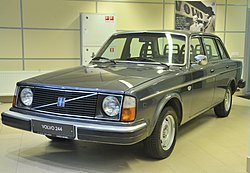

headder
E-клас
E-клас є другим найбільшим в європейській класифікації легкових автомобілів, який описується як "бізнес-автомобіль". Це еквівалентно категорії "повнорозмірний автомобіль", яка використовується у Сполучених Штатах, і категорії бізнес-автомобілів, яка використовується в Європ. E-клас є нішевим в Європі (3% у 2017 році).
Визначення
Європейські класи не ґрунтуються на критеріях розміру або ваги. Автомобілі E-класу мають довжину приблизно 4,8 метри. Більшість автомобілів E-класу є седанами, хоча деякі моделі також виробляються у кузові універсал.
Поточні моделі
У п'ятірку найбільш продаваних автомобілів E-класу в Європі входять Mercedes-Benz E-class, BMW 5 Series, Audi A6, Volvo S90 та Tesla Model S.


© Powered by Igor Khodachok 2020